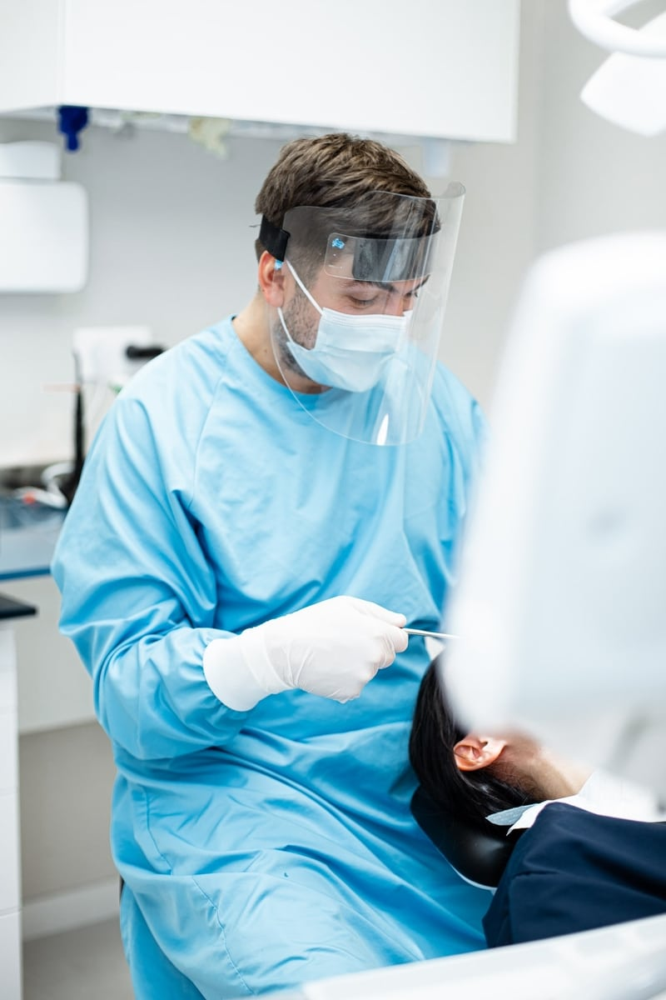

Urgência odontológica
Orientação para situações que precisam de atenção rápida.
CLÍNICA DENTÁRIA · BRUXELAS
Clínica dentária multidisciplinar e de urgência em Etterbeek, com uma equipe preparada para cuidar do seu sorriso em todas as fases.
-p-800.jpeg) CUIDADO
CUIDADONOSSA CLÍNICA
A OdontoSmile se apresenta como uma clínica dentária conveniada em Etterbeek, Bruxelas, com atendimento geral e especializado para diferentes necessidades.
O foco é receber cada paciente com cuidado, conforto e uma equipe preparada para orientar o melhor caminho para o tratamento.

QUANDO VOCÊ PRECISA
A clínica informa atendimento de urgência odontológica todos os dias. Antes de se deslocar, é importante ligar para confirmar a possibilidade de atendimento no mesmo dia.
Ligar para a clínica ↗ESPECIALIDADES
Uma equipe multidisciplinar para acompanhar diferentes momentos da sua saúde bucal.
Orientação para situações que precisam de atenção rápida.
Acompanhamento para alinhar dentes e melhorar a função do sorriso.
Cuidados gerais e tratamentos voltados à saúde e aparência dos dentes.
Atendimento pensado para crianças e adolescentes.
Cuidados com gengivas e com a parte interna dos dentes.
Tratamentos para substituir dentes ausentes, conforme avaliação profissional.
COMO A CLÍNICA SE APRESENTA
Um ambiente pensado para tornar a consulta mais tranquila, com equipamentos e estrutura de apoio.
Profissionais generalistas e especialistas reunidos para acompanhar diferentes necessidades.
Materiais e equipamentos para apoiar diagnósticos e tratamentos com cuidado.
Informação clara para ajudar cada paciente a entender seus próximos passos.
PLANEJE SUA CONSULTA
1040 Etterbeek, Bélgica
Seg. a sex.: 09:30 às 20:00
Sáb. e dom.: 10:00 às 20:00
secretariat.odontosmile@gmail.com
CUIDAR TAMBÉM É ORIENTAR